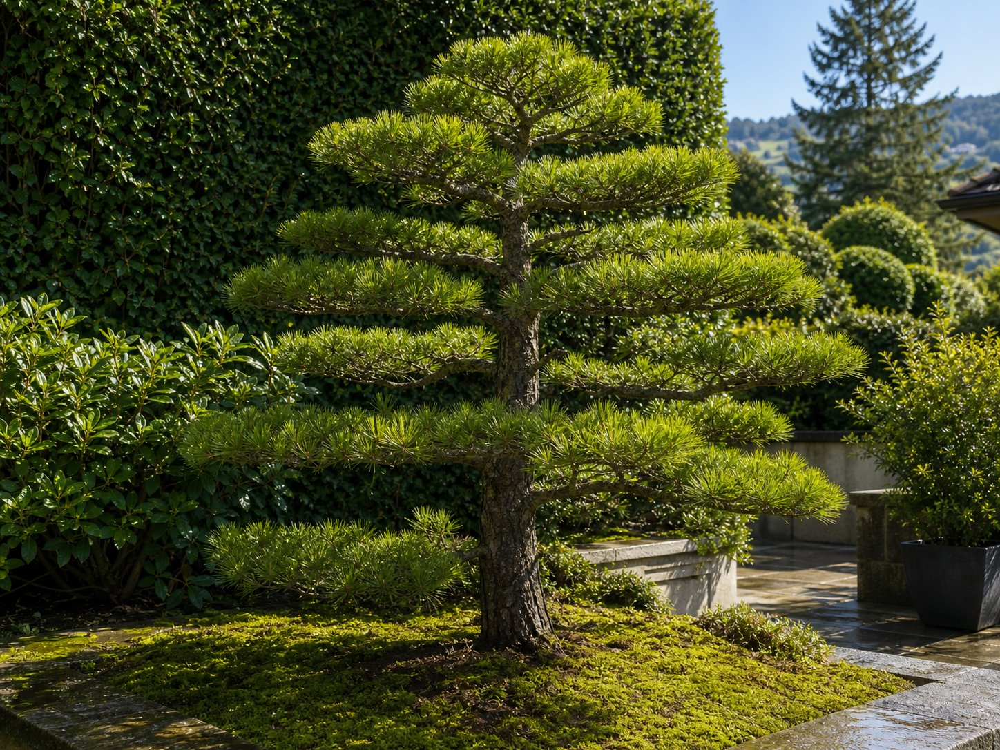

Чому крону треба відкривати.

Коли крона стає занадто щільною, зовні вона ще зелена, але всередині втрачає світло, повітря і структуру. Віктор відкриває крону так, щоб дерево дихало і тримало форму роками.
1. Прочитати
Де дерево витрачає силу?
2. Розвантажити
Забрати сухе, зайве і затінене.
3. Залишити майбутнє
Зберегти бруньки, які будують форму.